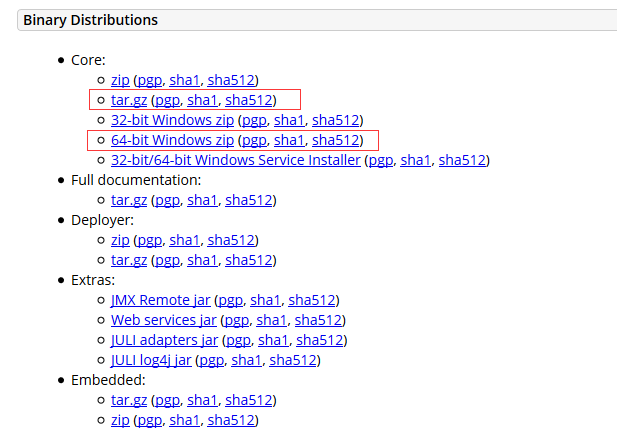
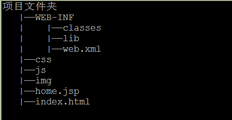

一、Tomcat的下载
推荐下载Tomcat压缩包（windows下载zip包，linux下载tar.gz包），一般我是直接在apache官网（https://apache.org/）中直接进到Tomcat项目中找到对应的版本下载，非常不推荐下载Tomcat的安装包，因为如果是直接安装Tomcat的话，那么久看不到启动、运行时控制台输出、异常报错等信息，这样非常不利于开发者使用。

二、Web应用的目录结构
